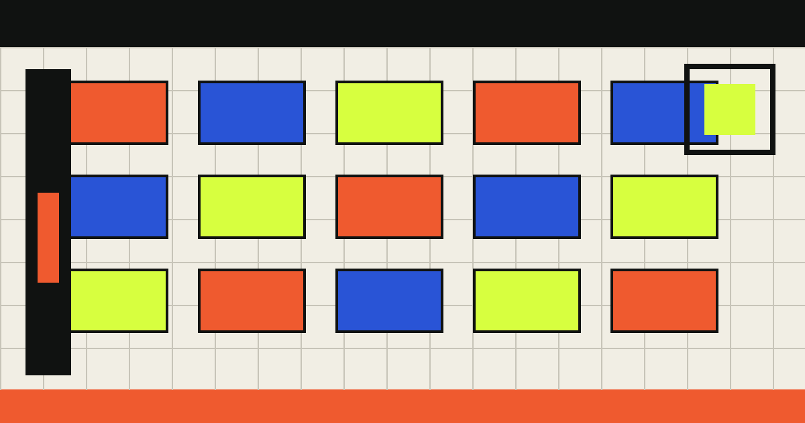

INDEX / 11
[[GLOSSARY_TITLE]]
[[AUTHOR_NAME]]
[[GLOSSARY_DECK]]

- [[TERM_ONE]]
- [[TERM_ONE_DEFINITION]]
- [[TERM_TWO]]
- [[TERM_TWO_DEFINITION]]
- [[TERM_THREE]]
- [[TERM_THREE_DEFINITION]]
- [[TERM_FOUR]]
- [[TERM_FOUR_DEFINITION]]
INDEX / 11
[[GLOSSARY_DECK]]
